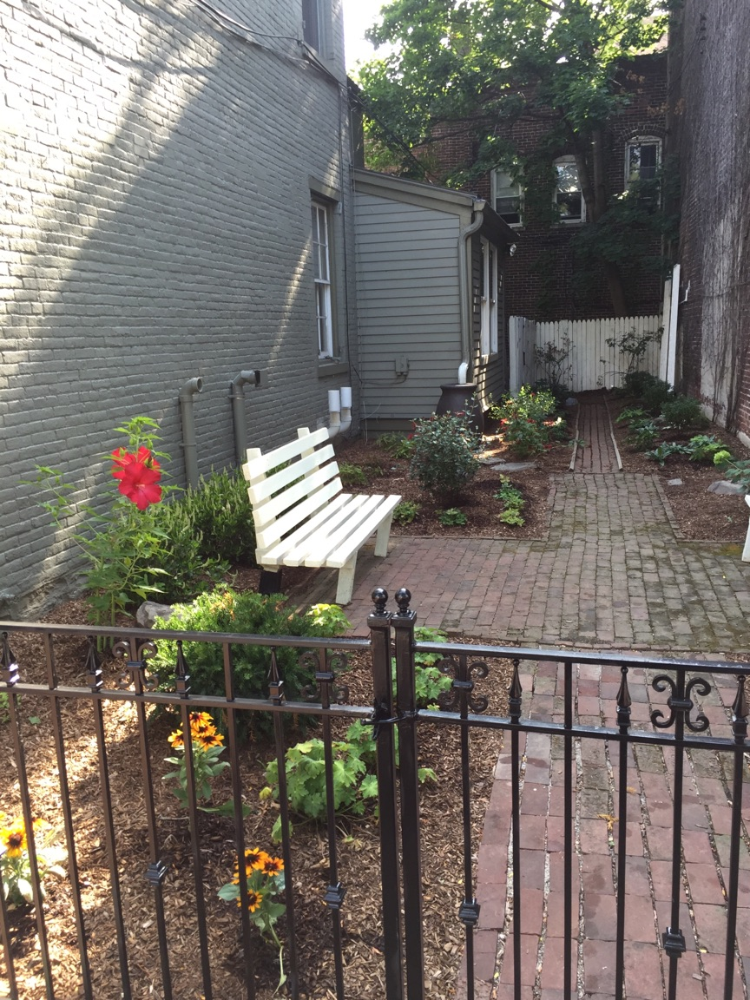

Just before the Parsons-Taylor house on 4th and Ferry street is a small garden owned by the Society. The garden is rich with popular colonial era plants and herbs, and open to the public to enjoy.
4th and Ferry St.

Just before the Parsons-Taylor house on 4th and Ferry street is a small garden owned by the Society. The garden is rich with popular colonial era plants and herbs, and open to the public to enjoy.